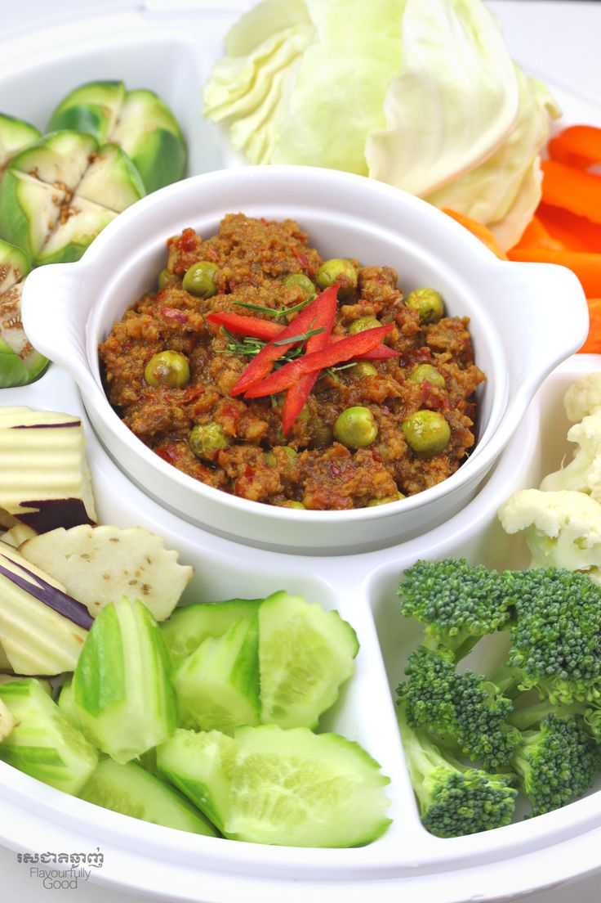
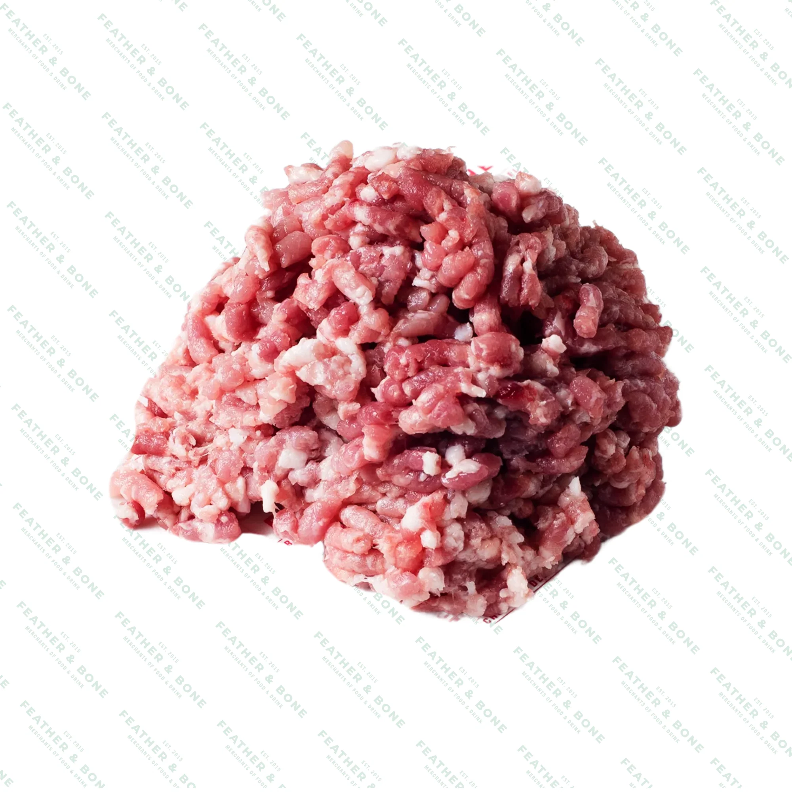
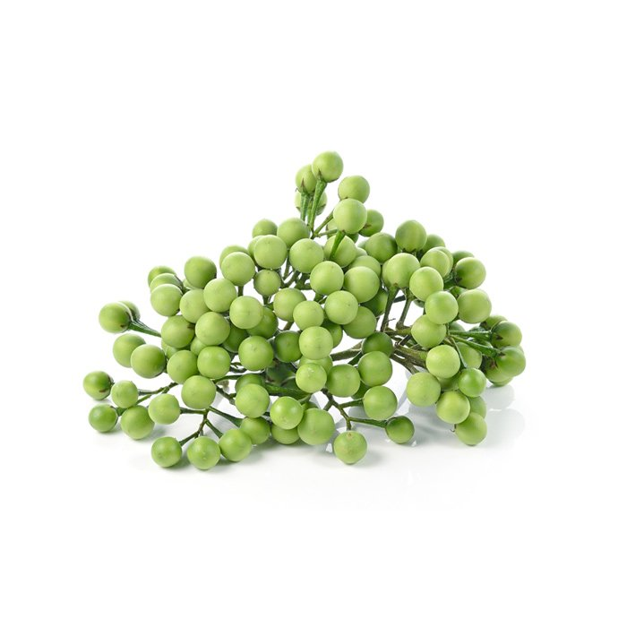

Prohok Ktis
ប្រហុកខ្ទិះ
Prohok Ktis is a traditional Cambodian dip made from fermented fish blended with coconut milk, herbs, and sometimes minced meat. It’s creamy, savory, and full of umami, commonly served with fresh vegetables for dipping.

Ingredients
Prohok (fermented fish paste)

50g
Buy NowCoconut Milk

100ml
Buy NowMinced Pork or Beef

50g
Buy Nowpea eggplant

50g
Buy NowGarlic

2 cloves
Buy NowKaffir Lime Leaves

3 leaves
Buy NowLemongrass

1 stalk
Buy NowChili

1-2 pieces (optional)
Buy NowCucumber

1 medium
Buy NowCabbage (Boiled)

1
Buy NowLong Beans

100g
Buy Now-
Step 1: Prepare ingredients
- Peel and mince the garlic
- Slice kaffir lime leaves finely
- Chop lemongrass thinly
- Wash and cut fresh vegetables for dipping
-
Step 2: Cook the meat
- In a pan, lightly sauté minced pork or beef until cooked through
- Set aside
-
Step 3: Mix coconut milk and prohok
- In a separate pan, gently heat coconut milk
- Add prohok and pea eggplant stir until smooth and fragrant
-
Step 4: Combine meat with prohok mixture
- Add cooked minced meat to the prohok-coconut mixture
- Mix well to create a thick dip
-
Step 5: Add herbs and chili
- Stir in garlic, lemongrass, and kaffir lime leaves
- Add chili if desired for spiciness
-
Step 6: Serve
- Transfer the dip to a serving bowl
- Serve with fresh vegetables for dipping
- Enjoy immediately